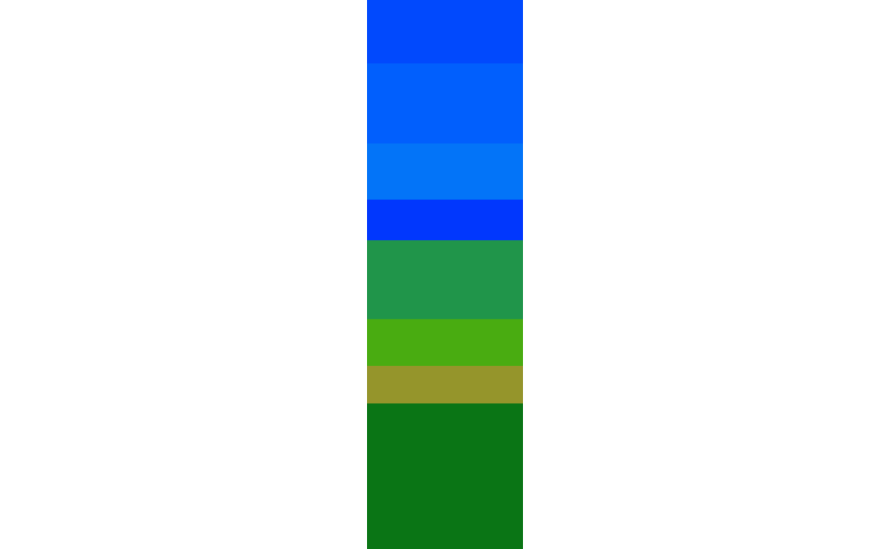

Phytopatometry in R with the package pliman
Tiago Olivoto
2023-01-20
Source:vignettes/phytopatometry.Rmd
phytopatometry.RmdSingle images
library(pliman)
#> |==========================================================|
#> | Tools for Plant Image Analysis (pliman 1.2.0) |
#> | Author: Tiago Olivoto |
#> | Type 'citation('pliman')' to know how to cite pliman |
#> | Type 'vignette('pliman_start')' for a short tutorial |
#> | Visit 'http://bit.ly/pkg_pliman' for a complete tutorial |
#> |==========================================================|
# set the path directory
path_soy <- "https://raw.githubusercontent.com/TiagoOlivoto/pliman/master/vignettes/imgs"
# import images
img <- image_import("leaf.jpg", path = path_soy)
healthy <- image_import("healthy.jpg", path = path_soy)
symptoms <- image_import("sympt.jpg", path = path_soy)
background <- image_import("back.jpg", path = path_soy)
image_combine(img, healthy, symptoms, background, ncol = 4)
Image palettes
Sample palettes can be made by simply manually sampling small areas
of representative images and producing a composite image that will
represent each of the desired classes (background, healthy, and
symptomatic tissues). Another way is to use the
image_palette() function to create sample color
palettes
pals <- image_palette(img, npal = 8)
# to extract the color palettes, use the object
plot(pals$palette_list[[1]])
# default settings
res <-
measure_disease(img = img,
img_healthy = healthy,
img_symptoms = symptoms,
img_background = background)
res$severity
#> healthy symptomatic
#> 1 89.29535 10.70465Alternatively, users can create a mask instead of showing the original image.
# create a personalized mask
res2 <-
measure_disease(img = img,
img_healthy = healthy,
img_symptoms = symptoms,
img_background = background,
show_original = FALSE, # create a mask
show_contour = FALSE, # hide the contour line
col_background = "white", # default
col_lesions = "red", # default
col_leaf = "green") # default
res2$severity
#> healthy symptomatic
#> 1 88.56686 11.43314Variations in image palettes
The results may vary depending on how palettes are chosen and are subjective due to the researcher’s experience. In the following example, I show a second example with a variation in the color palettes, where only the necrotic area is assumed to be the diseased tissue. Therefore, the symptomatic area will be smaller than the previous one.
# import images
healthy2 <- image_import("healthy2.jpg", path = path_soy)
symptoms2 <- image_import("sympt2.jpg", path = path_soy)
background2 <- image_import("back2.jpg", path = path_soy)
image_combine(healthy2, symptoms2, background2, ncol = 3)
res3 <-
measure_disease(img = img,
img_healthy = healthy2,
img_symptoms = symptoms2,
img_background = background2)
res3$severity
#> healthy symptomatic
#> 1 93.57397 6.426029Lesion features
res4 <-
measure_disease(img = img,
img_healthy = healthy,
img_symptoms = symptoms,
img_background = background,
show_features = TRUE,
marker = "area")
res4$shape
#> id x y area area_ch perimeter radius_mean radius_min
#> 1 1 222.2931 114.7119 1010 1295 199.61017 22.183207 0.7528553
#> 2 2 190.8676 130.5574 1299 1783 255.30866 20.397650 1.6153683
#> 3 3 178.9234 213.8662 3706 6119 478.37468 50.057602 1.1243269
#> 4 4 210.8435 194.5133 1802 2352 253.65180 23.986855 1.5987005
#> 5 5 264.3333 193.6170 141 129 44.89949 6.314238 4.3480910
#> 6 6 120.5714 202.3878 98 90 37.38478 5.164271 3.4979989
#> 9 9 211.8217 329.2505 914 981 148.05382 18.169773 7.3467016
#> 11 11 281.2302 324.9849 265 258 63.87006 8.993543 5.3963555
#> 12 12 348.1505 336.0358 279 267 65.28427 9.228438 5.4057980
#> 15 15 184.7265 385.5271 1861 1961 189.85281 24.930863 12.3986163
#> 16 16 334.2733 370.2267 150 142 48.21320 6.501370 4.0936178
#> 17 17 250.6408 377.4437 142 135 47.62742 6.573927 3.2834706
#> 19 19 173.4324 450.3550 2220 3081 280.27922 28.665937 12.4286853
#> 23 23 110.0653 465.0735 245 267 72.69848 8.702411 3.2709950
#> 24 24 123.6738 493.3907 929 930 135.22540 17.846334 9.5809648
#> 25 25 149.8735 521.2670 1281 1358 163.71068 20.983353 11.0599713
#> radius_max radius_sd diam_mean diam_min diam_max major_axis minor_axis
#> 1 38.542611 11.263640 44.36641 1.505711 77.08522 89.84308 18.903530
#> 2 38.718219 8.881946 40.79530 3.230737 77.43644 72.71750 33.332841
#> 3 94.663293 25.455018 100.11520 2.248654 189.32659 191.34754 39.686071
#> 4 42.410752 10.095700 47.97371 3.197401 84.82150 81.18912 43.615406
#> 5 8.257419 1.177836 12.62848 8.696182 16.51484 16.75428 11.156820
#> 6 6.859605 1.031507 10.32854 6.995998 13.71921 13.62462 9.833557
#> 9 30.430580 6.359784 36.33955 14.693403 60.86116 56.69722 21.450657
#> 11 12.617780 1.958990 17.98709 10.792711 25.23556 24.74883 13.982821
#> 12 12.549841 2.053469 18.45688 10.811596 25.09968 25.36472 14.329597
#> 15 38.258196 7.471060 49.86173 24.797233 76.51639 75.64237 32.227367
#> 16 9.079214 1.388511 13.00274 8.187236 18.15843 17.55110 11.408534
#> 17 9.572791 1.662590 13.14785 6.566941 19.14558 19.01355 9.896854
#> 19 47.004239 9.807828 57.33187 24.857371 94.00848 88.21660 46.167199
#> 23 13.520618 2.798243 17.40482 6.541990 27.04124 25.40512 14.547621
#> 24 28.075231 5.567908 35.69267 19.161930 56.15046 54.33319 22.197573
#> 25 32.745282 6.054805 41.96671 22.119943 65.49056 59.45846 30.087374
#> caliper length width radius_ratio theta eccentricity
#> 1 76.65507 76.41021 22.24574 51.195243 1.40005000 0.07066385
#> 2 66.27217 65.60423 37.16200 23.968663 1.47746006 0.29278387
#> 3 185.32674 185.16737 45.67843 84.195523 1.16724278 0.05618044
#> 4 76.15773 73.97241 46.40789 26.528265 1.27549216 0.34992294
#> 5 16.15549 15.35423 10.42874 1.899091 0.10240037 0.49700852
#> 6 13.34166 12.95595 9.71937 1.961008 0.11348367 0.65117989
#> 9 59.53990 59.30913 23.67513 4.142074 1.54238634 0.19538633
#> 11 24.59675 24.59235 14.83154 2.338204 -0.45166324 0.37932684
#> 12 24.83948 24.75240 14.41650 2.321552 0.95656030 0.37965027
#> 15 73.68175 73.64176 34.84223 3.085683 1.20484991 0.27736087
#> 16 17.49286 17.16522 11.51575 2.217895 0.69998539 0.48698114
#> 17 18.38478 18.38051 10.64983 2.915449 -0.75467684 0.32482520
#> 19 87.32125 87.20918 53.82683 3.781916 0.98600122 0.30711230
#> 23 25.70992 25.02290 13.99220 4.133488 0.02467360 0.33813890
#> 24 53.85165 53.77319 22.46247 2.930314 -0.28920149 0.23624591
#> 25 63.50591 62.94886 32.89264 2.960702 -0.05777585 0.29664408
#> form_factor narrow_factor asp_ratio rectangularity pd_ratio plw_ratio
#> 1 0.3185414 1.003205 3.434824 1.682972 2.604005 2.023296
#> 2 0.2504309 1.010181 1.765358 1.876816 3.852427 2.484364
#> 3 0.2035068 1.000861 4.053716 2.282287 2.581250 2.072269
#> 4 0.3519563 1.029542 1.593962 1.905052 3.330611 2.107087
#> 5 0.8789134 1.052185 1.472300 1.135640 2.779209 1.741440
#> 6 0.8811429 1.029771 1.333003 1.284936 2.802107 1.648699
#> 9 0.5239825 1.003891 2.505123 1.536271 2.486632 1.784119
#> 11 0.8163213 1.000179 1.658112 1.376386 2.596687 1.620085
#> 12 0.8226156 1.003518 1.716950 1.279007 2.628246 1.666737
#> 15 0.6488169 1.000543 2.113578 1.378744 2.576660 1.750054
#> 16 0.8109034 1.019087 1.490586 1.317803 2.756165 1.681017
#> 17 0.7866547 1.000232 1.725898 1.378516 2.590590 1.640608
#> 19 0.3551248 1.001285 1.620180 2.114502 3.209748 1.987288
#> 23 0.5825393 1.027455 1.788347 1.429084 2.827643 1.863342
#> 24 0.6384238 1.001459 2.393912 1.300192 2.511073 1.773781
#> 25 0.6006272 1.008849 1.913767 1.616358 2.577881 1.708140
#> solidity convexity elongation circularity circularity_haralick
#> 1 0.7799228 0.5974372 0.7088643 39.44972 1.969453
#> 2 0.7285474 0.5573036 0.4335427 50.17899 2.296529
#> 3 0.6056545 0.5002032 0.7533128 61.74914 1.966512
#> 4 0.7661565 0.6145574 0.3726324 35.70435 2.375948
#> 5 1.0930233 0.8837340 0.3207906 14.29762 5.360880
#> 6 1.0888889 0.8546254 0.2498144 14.26144 5.006530
#> 9 0.9317023 0.8199079 0.6008180 23.98242 2.856980
#> 11 1.0271318 0.8701396 0.3969043 15.39390 4.590908
#> 12 1.0449438 0.8847297 0.4175718 15.27611 4.494073
#> 15 0.9490056 0.8752968 0.5268686 19.36813 3.336992
#> 16 1.0563380 0.7916804 0.3291227 15.49675 4.682259
#> 17 1.0518519 0.7357469 0.4205915 15.97444 3.954027
#> 19 0.7205453 0.6721305 0.3827848 35.38578 2.922761
#> 23 0.9176030 0.8186382 0.4408243 21.57171 3.109955
#> 24 0.9989247 0.8832514 0.5822738 19.68343 3.205214
#> 25 0.9432990 0.8606176 0.4774703 20.92208 3.465570
#> circularity_norm coverage asm con cor var
#> 1 3.444544 0.0036706584 0.013171623 6.734901 0.6266624 10.019855
#> 2 4.373575 0.0047209755 0.012945101 6.435333 0.7130978 12.215205
#> 3 5.207519 0.0134687721 0.009181544 7.222679 0.7047163 13.230066
#> 4 3.031352 0.0065490360 0.012036577 6.523789 0.6270467 9.746120
#> 5 1.353801 0.0005124384 0.011678730 10.378049 0.4694780 10.780979
#> 6 1.381605 0.0003561629 0.047648425 2.301205 0.6137748 3.979097
#> 9 2.056996 0.0033217641 0.014684173 5.141526 0.6766966 8.951549
#> 11 1.378459 0.0009630935 0.020771049 4.106139 0.6031842 6.173861
#> 12 1.362097 0.0010139739 0.020891067 4.574384 0.6070767 6.820963
#> 15 1.614124 0.0067634606 0.015935818 4.344226 0.7352681 9.204952
#> 16 1.450815 0.0005451473 0.020957768 4.832061 0.5774869 6.718238
#> 17 1.504260 0.0005160728 0.021055425 4.038540 0.6256997 6.394786
#> 19 2.981079 0.0080681798 0.017152613 3.803071 0.7263879 7.949751
#> 23 1.988522 0.0008904072 0.036308904 2.144009 0.6928111 4.489724
#> 24 1.674507 0.0033762788 0.019101351 4.047253 0.6266989 6.420896
#> 25 1.765539 0.0046555578 0.014940637 3.840541 0.8024475 10.720304
#> idm sav sva sen ent dva den f12
#> 1 0.4067816 42.35168 1712.6608 1.323446 2.011766 6.734901 0.7759591 0.1142988
#> 2 0.4317255 39.75067 1510.6811 1.380692 2.040422 6.435333 0.7679165 0.1595560
#> 3 0.3773647 34.89164 1162.2408 1.417120 2.148303 7.222679 0.7928022 0.1330525
#> 4 0.3936810 39.47358 1483.4865 1.328776 2.025125 6.523789 0.7733336 0.1052731
#> 5 0.3286018 40.17480 1538.3515 1.321153 2.048935 10.378049 0.8556233 0.1044179
#> 6 0.5412310 44.71084 1914.3661 1.067392 1.476622 2.301205 0.5791049 0.1583495
#> 9 0.4292241 34.49738 1127.1735 1.323462 1.976410 5.141526 0.7262378 0.1353379
#> 11 0.4299729 39.23413 1462.8292 1.204670 1.802687 4.106139 0.6776435 0.1113978
#> 12 0.4403348 44.09360 1856.5812 1.223190 1.822201 4.574384 0.7016279 0.1178577
#> 15 0.4458887 34.64502 1138.2284 1.332069 1.953106 4.344226 0.6928665 0.1621607
#> 16 0.4315519 41.77481 1662.3688 1.224496 1.807869 4.832061 0.7184681 0.1133701
#> 17 0.4354099 42.31034 1706.0400 1.218990 1.785291 4.038540 0.6730195 0.1417150
#> 19 0.4732104 38.32451 1394.7247 1.301159 1.892684 3.803071 0.6676532 0.1665979
#> 23 0.5419391 43.17857 1781.3071 1.113239 1.546540 2.144009 0.5637888 0.1756728
#> 24 0.4502542 38.14859 1380.3504 1.233633 1.835912 4.047253 0.6798776 0.1168758
#> 25 0.4710168 31.80447 960.4489 1.383946 1.973683 3.840541 0.6669341 0.2146189
#> f13
#> 1 0.4652078
#> 2 0.5458707
#> 3 0.5135821
#> 4 0.4489018
#> 5 0.4495186
#> 6 0.4735519
#> 9 0.4994108
#> 11 0.4376863
#> 12 0.4517098
#> 15 0.5399449
#> 16 0.4419173
#> 17 0.4882333
#> 19 0.5394900
#> 23 0.5075283
#> 24 0.4514301
#> 25 0.6146622
res4$statistics
#> stat value
#> 1 n 16.000
#> 2 min_area 98.000
#> 3 mean_area 1021.375
#> 4 max_area 3706.000
#> 5 sd_area 1000.306
#> 6 sum_area 16342.000